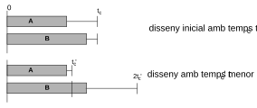
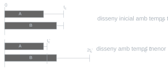
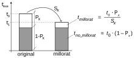
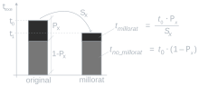
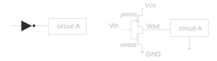
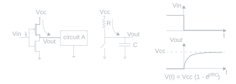
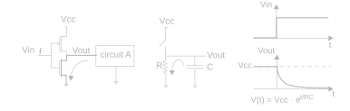

Tema 6: Rendiment i potència
6.1 Rendiment
6.1.1 Definicions
El disseny de computadors aspira a millorar-ne contínuament el rendiment. Cal, per tant, definir amb precisió aquest concepte a fi de ser capaços de mesurar si els nous dissenys aporten millores o no.
6.1.1.1 Temps d’execució i productivitat
El terme «rendiment» s’empra per a referir-se a dos conceptes diferents:
- Temps d’execució o de resposta (\(t_{exe}\)): Temps transcorregut, mesurat en segons (\([s]\)), entre l’inici i el final d’una tasca. És el temps que experimenta l’usuari.
- En un programa consisteix en la suma de diversos temps: Temps de CPU + Temps d’espera d’E/S + Temps en cua mentre s’executen altres programes (concurrència).
- A EC, es considera com a temps d’execució exclusivament el temps de CPU, ja que és el que depèn més directament del disseny de la CPU.
- Productivitat (throughput): Nombre de tasques completades per unitat de temps. Usat sovint per quantificar el rendiment en centres de dades.
Un avió A porta 100 passatgers a 1200 km/h. Un avió B porta 500 passatgers a 1000 km/h.
Preguntes: Quin té més rendiment? Quin té més productivitat?
Respostes: A té menor temps de resposta. B té major productivitat.
Un computador A té 1 CPU que tarda \(10\ \mu\text{s}\). B té 200 CPUs que tarden cada una \(20\ \mu\text{s}\).
Preguntes: Quin té més rendiment? Quin té més productivitat?
Respostes: A té menor temps de resposta. B té major productivitat.
Quina relació hi ha entre productivitat i temps de resposta?
- Sempre: A menor temps d’execució, major productivitat.
- Només en cas de congestió: Augmentar la productivitat pot disminuir el temps d’execució, ja que es redueix el temps que romanen les tasques encuades (com en el cas d’un centre de dades). Però si el sistema no està congestionat, augmentar la productivitat no té cap efecte sobre el temps d’execució.
6.1.1.2 Rendiment i guany de rendiment
- Rendiment: La inversa del temps d’execució:
\[\text{Rendiment} = \frac{1}{t_{exe}} \qquad [s^{-1}] \tag{6.1}\]
- Guany de rendiment o guany (speedup) [símbol \(s\)]: La relació (adimensional) entre el rendiment d’un sistema nou i el d’un sistema de referència (original, inicial, etc.):
\[\text{Guany} = \frac{\text{Rendiment}_{nou}}{\text{Rendiment}_{referència}}\]
Quina diferència hi ha entre temps d’execució i rendiment?
- El temps d’execució és una mesura de «quant de temps» triga una tasca, mentre que el rendiment és una mesura de «quant de treball» es pot fer per unitat de temps. Com que el temps d’execució es mesura en segons, el rendiment es mesura en tasques per segon (o instruccions per segon, o operacions per segon, etc.).
Un guany de 2 significa que el sistema nou és el doble de ràpid que el de referència.
6.1.2 Factors que influeixen en el temps d’execució
Per tal d’entendre quins aspectes influeixen en el temps d’execució, i per tant conèixer com és possible millorar-lo, es desglossa en els seus components:
\[t_{exe} = n_{cicles} \cdot t_{clock} = n_{cicles} / f_{clock} \qquad [s] \tag{6.2}\]
On \(t_{exe}\) és el temps d’execució (de CPU), \(n_{cicles}\) el nombre de cicles de rellotge que tarda l’execució i \(t_{clock}\) i \(f_{clock}\) són el període (\([s]\)) i la freqüència del rellotge (\([Hz]\)). El rendiment depèn del nombre de cicles i de la freqüència.
6.1.2.1 Reducció del nombre de cicles
Intuïtivament, s’identifiquen dos camins per a reduir-lo: en primer lloc, fer que el programa s’executi amb menys instruccions (\(n_{ins}\)), i en segon lloc, fer que aquestes tardin el mínim nombre de cicles per instrucció (CPI). És a dir, essent CPI la mitjana de cicles per instrucció de tot el programa, el nombre de cicles total es pot expressar com el producte:
\[n_{cicles} = n_{ins} \cdot CPI\]
I per tant, el temps d’execució és:
\[t_{exe} = n_{ins} \cdot CPI \cdot t_{clock} \tag{6.3}\]
Per a reduir \(n_{ins}\) cal millorar l’eficiència del compilador. El CPI d’un programa determinat és una mitjana que depèn del retard de cada tipus d’instrucció (\(CPI_{i}\)) i de quantes n’hi ha de cada tipus (\(n_{i}\)), fent una mitjana ponderada. Així, suposant que té \(m\) tipus diferents d’instruccions, el seu CPI és:
\[CPI = \frac{1}{n_{ins}} \cdot \left(\sum_{i=1}^{m} n_{i} \cdot CPI_{i}\right) \tag{6.4}\]
Conseqüentment, el temps d’execució és:
\[t_{exe} = \left(\sum_{i=1}^{m} n_{i} \cdot CPI_{i}\right) \cdot t_{clock} \tag{6.5}\]
Es pot reduir el temps d’execució reduint el retard \(CPI_{i}\) de cada tipus d’instrucció, però això requereix millorar el disseny de la microarquitectura. També es pot reduir el nombre d’instruccions \(n_{i}\) d’aquells tipus d’instruccions més lentes (amb major \(CPI_{i}\)) encara que sigui a costa d’augmentar el nombre de les més ràpides, si la suma total de cicles resultant és inferior, millorant l’habilitat del compilador.
Cal anar amb compte amb el concepte CPI, perquè es pot fer referència a:
- La quantitat de cicles per instrucció d’un programa en conjunt, o, fins i tot, a un conjunt de programes en un cert computador.
- La quantitat, en molts casos fixa, de cicles d’un tipus d’instruccions en un cert computador (\(CPI_{i}\) per al tipus \(i\)).1
Comparant el rendiment de dues versions d’un mateix programa generades per compiladors diferents s’està comparant l’efectivitat dels compiladors. Com que el temps de cicle és el mateix, la comparació dels temps d’execució es pot fer comparant el nombre de cicles de rellotge.
Es comparen dues versions d’un programa en un mateix computador, que disposa de 3 tipus d’instruccions A, B i C, amb CPI de 1, 2, 3 respectivament. El programa 1 (P1) consta de: 2 instruccions d’A, 1 de B i 2 de C. El programa 2 (P2) consta de: 4 instruccions d’A, 1 de B i 1 de C.
Pregunta 1: Quin és més ràpid?
Pregunta 2: Quins són els CPI?
Solució 1: Calculeu el nombre d’instruccions i cicles totals de cada programa:
| Tipus d’instrucció | CPI | Ins P1 | Ins P2 | Cicles P1 | Cicles P2 |
|---|---|---|---|---|---|
| A | 1 | 2 | 4 | 2 | 4 |
| B | 2 | 1 | 1 | 2 | 2 |
| C | 3 | 2 | 1 | 6 | 3 |
| Total | 5 | 6 | 10 | 9 |
Resposta 1: El més ràpid és P2 (9 cicles en lloc de 10).
Solució 2: Calculeu els CPI:
- \(CPI_{1} = 10 \text{ cicles} / 5 \text{ instruccions} = 2\)
- \(CPI_{2} = 9 \text{ cicles} / 6 \text{ instruccions} = 1,5\)
Resposta 2: P2 té més instruccions però menys cicles per instrucció.
6.1.2.2 Augment de la freqüència de rellotge (reducció del temps de cicle)
Sigui un circuit combinacional A que llegeix dades d’entrada d’un biestable i escriu dades de sortida en un altre biestable. En principi, reduint el temps de cicle del circuit A es pot aconseguir que calculi més resultats per unitat de temps, reduint doncs el temps total d’execució de les tasques.
Però cal parar atenció: reduir excessivament el temps de cicle pot fer que les dades de sortida de A encara no estiguin calculades, i que el resultat correcte no s’obtingui fins al següent cicle de rellotge. En aquest cas, haurà augmentat el nombre de cicles per executar la mateixa tasca, i, per tant, no és segur que s’hi guanyi.
Per exemple, suposem dos circuits A i B de diferent retard, que formen part del mateix processador i escriuen repetidament el seu resultat sobre un biestable quan arriba el flanc de rellotge. Suposem que inicialment el temps de cicle és \(t_{clock}\) i volem reduir-lo a \(t_{clock}'\):


Després de reduir el temps de cicle, la tasca A es realitzarà en menys temps, ja que no canvia el nombre de cicles, però la tasca B no podrà escriure en el primer cicle i necessitarà un cicle més: necessitarà el doble de cicles que abans. La reducció de \(t_{clock}\) només suposarà una millora de rendiment si la influència del cas A en el temps d’execució total és major que la de B.
El processador A té \(t_{cA}=500\) ps i \(CPI_{A}=2\). El nou processador B té \(t_{cB}=250\) ps, però comporta augmentar el \(CPI_{B}=3\).
Pregunta: Serà més ràpid el nou disseny?
Solució:
\[s_{B} = t_{A} / t_{B} = (n \cdot CPI_{A} \cdot t_{cA}) / (n \cdot CPI_{B} \cdot t_{cB}) = (CPI_{A} \cdot t_{cA}) / (CPI_{B} \cdot t_{cB}) = (2 \cdot 500 \text{ ps}) / (3 \cdot 250 \text{ ps}) = 1,33\]
Resposta: El rendiment del nou disseny B és 1,33 vegades més ràpid que el de l’original.
Pregunta: Suposem un computador A, amb \(f_{A}=2\ \text{GHz}\), que executa un programa en \(t_{exe}=10\ \text{s}\). Amb certes millores al circuit, s’executa en \(6\ \text{s}\), però augmenta el nombre de cicles en un factor 1,2. Quina freqüència de rellotge té el nou disseny?
Solució: Tenim dues equacions amb dues incògnites, \(n_{A}\) i \(f_{B}\):
\[ \left\{ \begin{array}{l} f_{A} = n_{A} / t_{A} \\ f_{B} = n_{B} / t_{B} = (1,2 \cdot n_{A}) / t_{B} \end{array} \right. \]
Aïllem \({n_{A}}\) de la primera equació i la substituïm a la segona:
\[n_{A} = t_{A} \cdot f_{A}\]
\[t_{B} = 1,2 \cdot (t_{A} \cdot f_{A})/f_{B}\]
Resposta: Aïllant \(f_{B}\)
\[f_{B} = (1,2 \cdot t_{A} \cdot f_{A}) / t_{B} = (1,2 \cdot 10\ \text{s} \cdot 2\ \text{GHz}) / 6\ \text{s} = 4\ \text{GHz}\]
6.2 Llei d’Amdahl
El màxim guany (speedup) que es pot aconseguir minimitzant el retard d’una part (d’un circuit, d’un programa, etc.) està limitat per la fracció de temps que representa aquesta part sobre el temps total.[1]
Suposem per exemple un programa que s’executa en un temps \(t_{0}\). Si optimitzem una subrutina, que comporta una fracció \(P_{x}\) del temps total, i aconseguim que aquesta subrutina tingui un guany de rendiment \(s_{x}\), el temps d’execució total es redueix de \(t_{0}\) a \(t_{1}\) (Figura 6.2).


Quin ha estat el guany de rendiment total \(s\)?
\[s = \frac{t_{0}}{t_{1}} = \frac{t_{0}}{t_{\text{millorat}} + t_{\text{no-millorat}}}\]
On:
- \(t_{\text{millorat}} = \frac{t_{0} \cdot P_{x}}{s_{x}}\)
- \(t_{\text{no-millorat}} = t_{0} \cdot (1-P_{x})\)
Per tant:
\[s = \frac{t_{0}}{\frac{t_{0} \cdot P_{x}}{s_{x}} + t_{0} \cdot (1-P_{x})} = \frac{1}{\frac{P_{x}}{s_{x}} + (1-P_{x})} \tag{6.6}\]
Quin guany total màxim (\(s_{max}\)) es pot aconseguir amb la millor optimització possible d’aquesta subrutina (suposant un guany \(s_{x}\) infinit)?
\[s_{max} = \lim_{s_{x} \to \infty} s = \frac{1}{1-P_{x}} \tag{6.7}\]
Pregunta: Quin és el guany total màxim assolible si es millora una part d’un programa que representa un 80% del temps d’execució total?
Resposta: \(s_{max} = 1 / (1 - 0,80) = 5\)
Conclusió: Cal concentrar els esforços d’optimització en aquelles parts del programa (o circuit) que comporten el major cost en temps.
6.3 Potència
L’any 1965 Gordon Moore (co-fundador d’Intel) va predir que la densitat de transistors al xip es podria duplicar cada 2 anys (a la pràctica, durant moltes dècades va passar cada any i mig aproximadament). Aquesta predicció es coneix com a llei de Moore (tot i que en realitat és un principi). Durant dècades, aquesta duplicació de transistors va alimentar dos grans motors de rendiment: l’augment de la freqüència de rellotge i el creixement de les memòries cau (Tema 7).
La miniaturització que fa possible la llei de Moore permet reduir el temps de commutació dels transistors i, per tant, augmentar la freqüència de rellotge. Però a mesura que la freqüència creixia, també ho feia la dissipació de potència, ja que l’energia consumida es converteix en calor i cal dissipar-la per evitar superar els llindars de tolerància del circuit. A això cal afegir-hi la gran demanda de dispositius mòbils —telèfons intel·ligents, tauletes, portàtils ultraprims— que disposen d’un espai molt limitat per a dissipadors i que necessiten un consum molt baix per preservar l’autonomia de la bateria. El resultat és que el creixement de la freqüència de rellotge es va estancar cap a principis dels anys 2000. L’explicació de fons la proporciona l’escalat de Dennard.
Durant dècades, la reducció de la mida dels transistors no sols permetia encabir-ne més al xip (llei de Moore) sinó que, gràcies a l’escalat de Dennard (Robert Dennard, IBM, 1974), també mantenia la densitat de potència constant: transistors més petits consumien proporcionalment menys energia, de manera que duplicar-ne la quantitat no disparava el consum total. Això permetia augmentar la freqüència de rellotge sense problemes tèrmics.
Cap al 2003–2005, però, l’escalat de Dennard va deixar de funcionar. En arribar a dimensions de transistor molt petites, els corrents paràsits (\(P_s\) a la Equació 6.8) ja no eren negligibles i creixien amb cada nova generació, tot i que la freqüència no augmentés. A partir d’aquí, augmentar la freqüència implicava disparar la potència total per sobre dels límits tèrmics tolerables. La freqüència dels processadors va tocar sostre als 3–4 GHz i s’hi ha mantingut des d’aleshores.
La resposta de la indústria va ser el disseny multinucli (multicore): en lloc d’un sol nucli molt ràpid, es van integrar múltiples nuclis de freqüència moderada en un mateix xip, mantenint la potència total sota control mentre es continuava augmentant el rendiment total (productivitat). Això explica que avui dia un portàtil d’oficina i un servidor de centre de dades tinguin freqüències de rellotge similars (3–4 GHz), però el servidor en tingui molts més nuclis. La distribució física d’aquests nuclis en un xip modern es pot apreciar al Tema 7 (Figura 7.22).
La potència (\(P\)) és l’energia dissipada per unitat de temps per la circulació de corrents elèctrics en el circuit, i es pot dividir en dos tipus: la potència dinàmica (\(P_{d}\)), causada pels corrents de càrrega i descàrrega durant la commutació de les portes; i la potència estàtica (\(P_{s}\)), fruit dels corrents paràsits que circulen pels transistors independentment de si commuten o no:
\[P = P_{d} + P_{s} \tag{6.8}\]
6.3.1 Potència dinàmica
El consum d’energia dinàmic és l’originat pels corrents de càrrega i descàrrega de les capacitats equivalents dels transistors que tenen lloc en les commutacions. En cada cicle complet de càrrega i descàrrega d’una porta es produeix un corrent elèctric ja que hi ha un desplaçament net de càrrega del pol positiu a terra. La càrrega desplaçada en un cicle complet és:
\[q_{i} = C_{i} \cdot V_{CC}\]
On \(C_{i}\) és la capacitat equivalent (capacitància) en farads del circuit connectat a la sortida de la porta. \(C_{i}\) depèn del nombre (fan-out), material i mida dels transistors i de les interconnexions connectats a la sortida de la porta. \(V_{CC}\) és la tensió d’alimentació en volts. El corrent elèctric generat en tot el circuit durant un cicle de rellotge és igual a la càrrega i descàrrega agregada de totes les portes que commutin dividida pel temps de cicle de rellotge \(t_{clock}\):
\[I = \sum q_{i} / t_{clock} = \sum C_{i} \cdot V_{CC} \cdot f_{clock}\]
No totes les portes commuten en cada cicle de rellotge. Es defineix el factor d’activitat (\(\alpha\)) com la fracció mitjana de portes que commuten en cada cicle, per a un determinat programa o conjunt de programes representatius, de manera que \(\sum C_{i} = \alpha \cdot C\), essent \(C\) la capacitància agregada de tot el circuit. Per tant, la potència dinàmica dissipada (consum d’energia per unitat de temps) en watts pel circuit és:
\[P_{d} = \alpha \cdot C \cdot V_{CC}^{2} \cdot f_{clock} \tag{6.9}\]
Per tenir una idea, són bastant comuns els valors de \(\alpha\) pròxims a 0,1. L’energia dissipada en un temps \(t\), en joules, és:
\[E = P \cdot t \tag{6.10}\]
Les portes d’un circuit estan majoritàriament construïdes amb transistors de la família complementary metal–oxide–semiconductor (CMOS). Per exemple, una porta NOT (Figura 6.3):

El transistor p-channel metal–oxide–semiconductor (PMOS) condueix quan la tensió d’entrada baixa d’un cert llindar (threshold) \(V_{t}\), i roman tallat (circuit obert) si la tensió és superior. A la inversa, un transistor n-channel metal–oxide–semiconductor (NMOS) condueix quan la tensió d’entrada puja per sobre d’un cert llindar \(V_{t}\), i resta obert si la tensió és inferior. Aquests llindars determinen els nivells lògics 1 i 0.
Càrrega: Quan la tensió a l’entrada de la porta \(V_{in}\) passa del valor lògic 1 al 0 (funció graó de flanc descendent), el transistor PMOS passa a conduir i el NMOS queda obert. En conduir, el corrent flueix a través de la seva resistència equivalent R, i la càrrega elèctrica s’acumula en les etapes d’entrada del circuit A (en les portes d’altres transistors), que actuen així a manera d’un condensador C. El circuit equivalent i la gràfica de tensió \(V(t) = V_{CC}(1 - e^{-t/RC})\) (Figura 6.4):

Descàrrega: Quan la tensió a l’entrada de la porta \(V_{in}\) passa del valor lògic 0 al 1 (funció graó de flanc ascendent), el transistor NMOS passa a conduir i el PMOS queda obert. En conduir, el corrent flueix a través de la seva resistència equivalent R, i la càrrega elèctrica prèviament acumulada en les etapes d’entrada del circuit A (condensador C) es descarrega cap a terra. El circuit equivalent i la gràfica de tensió \(V(t) = V_{CC} \cdot e^{-t/RC}\) (Figura 6.5):

6.3.2 Potència estàtica
A diferència de la dinàmica, la potència estàtica (\(P_{s}\)) no depèn de la commutació de les portes: es dissipa contínuament, fins i tot quan el circuit no canvia d’estat. El seu origen són els corrents de fuita (leakage currents): petits corrents que travessen els transistors teòricament tallats, ja que cap transistor real es comporta com un interruptor ideal.
Els corrents de fuita tenen dos orígens principals:
- Fuita subllindar (subthreshold leakage): corrent que circula entre drenador i font d’un transistor amb una tensió de porta per sota del llindar \(V_{t}\). Creix com més petit és aquest llindar, i els transistors miniaturitzats el redueixen per poder funcionar a tensions \(V_{CC}\) més baixes.
- Fuita de porta (gate leakage): corrent que travessa l’òxid aïllant de la porta, cada cop més prim a mesura que es miniaturitza el transistor.
Donada la tensió d’alimentació \(V_{CC}\) i el corrent de fuita agregat de tot el circuit \(I_{fuita}\), la potència estàtica és el seu producte:
\[P_{s} = V_{CC} \cdot I_{fuita} \tag{6.11}\]
A diferència de la potència dinàmica (Equació 6.9), la potència estàtica no depèn de la freqüència de rellotge: un circuit alimentat però inactiu continua dissipant \(P_{s}\). A més, \(I_{fuita}\) creix amb la temperatura i amb la miniaturització dels transistors, de manera que la seva contribució a la potència total ha anat guanyant pes en cada nova generació. Aquest creixement dels corrents de fuita és precisament el que va posar fi a l’escalat de Dennard i va estancar la freqüència de rellotge (Aprofundiment 6.1).
Però alerta, no sempre és cert que un tipus d’instrucció sempre tardi un temps fix, ja que com es veurà al Tema 7, les instruccions de lectura (load) i d’escriptura (store) d’un mateix programa poden tardar més o menys depenent de l’estat de la memòria cau en cada instant. No obstant això, fins i tot en aquest cas, encara es pot parlar del CPI de les instruccions de lectura, cas en què es fa referència a la mitjana de les instruccions de lectura dins d’un determinat programa.↩︎